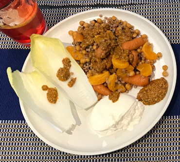

Carrot, chickpea & mandarin salad
Veg
- Heat fan oven to 180C
- Roasted carrots with coriander & cumin seeds and mandarin
- Mix thoroughly and heat in roasting tin for 30 mins
- 1 1 tin chickpeas
- pinch chilli flakes
- 2 sprigs rosemary
- olive oil
- seasoning
Salsa
- Blitz 25g walnuts in food processor
- Add and blitz again
- 20g anchovies
- ¼ tbsp harissa
- ½ tbsp chopped parsley
- ½ tbsp mandarin & lemon juice
- 50ml olive oil
- Season to taste
Mandarins
- Dry fry slices from 2 mandarins until caramelised and chared
Making the salad
- Put in bowl
- 50g fregola (cooked)
- Mandarin & lemon juice and toss to coat
- Carrots, chickpeas, mandarins
- Half the salsa
- Dress with remaining salsa
Serving
Notes
- chickpeas increased to whole tin instead of half
Pics
